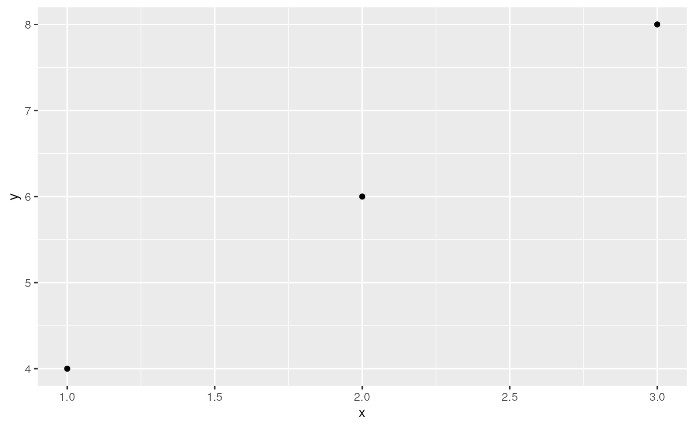

vignettes/Introduction-to-SOO.Rmd
Introduction-to-SOO.RmdRequired to properly load the SpatialOmicsOverlay dependency RBioFormats.
old_path <- system("echo $PATH", intern=TRUE)
if (!stringr::str_detect(old_path, "RBioFormats")) {
new_path <- paste(old_path, "/usr/local/lib/R/site-library/RBioFormats/", sep = ":")
Sys.setenv(PATH = new_path)
}
system("echo $PATH")Restart R after running the above chunk.
This vignette demonstrates how to use OME-TIFF files generated by the NanoString GeoMx ® Digital Spatial Profiler (DSP) instrument to enhance the data visualization. SpatialOmicsOverlay was specifically made to visualize and analyze the free-handed nature of Region of Interest (ROI) selection in a GeoMx experiment, and the immunofluorescence-guided segmentation process. The overlay from the instrument is recreated in the R environment allowing for plotting overlays with data like ROI type or gene expression.
In this vignette, we will be walking through a mouse brain dataset from the Spatial Organ Atlas. While we will be looking at only one sample, any of the data from our freely-downloadable Spatial Organ Atlas samples would also suffice.
The SpatialOmicsOverlay package is now available through Bioconductor.
# library(SpatialOmicsOverlay)
# library(GeomxTools)
library(ggplot2)
df <- data.frame(x = c(1,2,3), y = c(4,6,8))
ggplot(df, aes(x = x, y = y)) + geom_point()
Files needed:
In this example, we are downloading a TIFF image from AWS S3, but this variable is simply the file path to an OME-TIFF.
This function will be downloading a 13 GB file and will keep a 4 GB file in BiocFileCache. This download should take ~15 minutes, but you will only have to download once. Note this will download inside of the Docker image, but requires sufficient space on your device hosting the image.
# tifFile <- downloadMouseBrainImage()
# tifFileReading in the SpatialOverlay object can be done with or without the image. We will start without the image, as that can be added later.
If outline = TRUE, only ROI outline points are saved.
This decreases memory needed and figure rendering time downstream. If
ANY ROIs are segmented in the study, outline will be FALSE. In this
particular example, there are segmented ROIs, so we set
outline = FALSE.
# muBrainLW <- system.file("extdata", "muBrain_LabWorksheet.txt",
# package = "SpatialOmicsOverlay")
# muBrain <- readSpatialOverlay(ometiff = tifFile, annots = muBrainLW,
# slideName = "4", image = FALSE,
# saveFile = FALSE, outline = FALSE)The readSpatialOverlay function is a wrapper to walk
through all of the necessary steps to store the OME-TIFF file
components. This function automates XML extraction & parsing, image
extraction, and coordinate generation. These functions can also be run
separately if desired (xmlExtraction,
parseScanMetadata, parseOverlayAttrs,
addImageOmeTiff, createCoordFile).
SpatialOverlay objects hold data specific to the image and the ROIs. Here are a couple of functions to access the most important parts.
# #full object
# muBrain
# #sample names
# head(sampNames(muBrain))
# #slide name
# slideName(muBrain)
# #metadata of ROI overlays
# #Height, Width, X, Y values are in pixels
# head(meta(overlay(muBrain)))
# #coordinates of each ROI
# head(coords(muBrain))After parsing, ROIs can be plotted without the image in the object. These plots are the highest resolution versions since there is no scaling down to the image size. They might take a little time to render. If the image is attached to the object, coordinates are automatically scaled down to the image size and plotted as if they are on top of the image.
While manipulating the figure, there is a low-resolution option for faster rendering times.
A scale bar is automatically calculated when plotting. This
functionality can be turned off using scaleBar = FALSE.
Scale bars can be fully customized using corner,
textDistance, and variables that start with scaleBar:
scaleBarWidth, scaleBarColor, etc.
# plotSpatialOverlay(overlay = muBrain, hiRes = FALSE, legend = FALSE)colorBy, by default, is Sample_ID but almost any
annotation or data can be added instead, including gene expression,
tissue morphology annotations, pathway score, etc. These annotations can
come from a data.frame, matrix, GeomxSet object, or vector. Below we
attach the gene expression for CALM1 from a GeomxSet object and color
the segments by that value.
# muBrainAnnots <- readLabWorksheet(lw = muBrainLW, slideName = "4")
# muBrainGeomxSet <- readRDS(unzip(system.file("extdata", "muBrain_GxT.zip",
# package = "SpatialOmicsOverlay")))
# muBrain <- addPlottingFactor(overlay = muBrain, annots = muBrainAnnots,
# plottingFactor = "segment")
# muBrain <- addPlottingFactor(overlay = muBrain, annots = muBrainGeomxSet,
# plottingFactor = "Calm1")
# muBrain <- addPlottingFactor(overlay = muBrain, annots = 1:length(sampNames(muBrain)),
# plottingFactor = "ROILabel")
# muBrain
# head(plotFactors(muBrain))All generated figures are ggplot based so they can be easily
customized using functions from that or similar grammar of graphs
packages. For example, we can change the color scale to the
viridis color palette.
Note: hiRes and outline figures use
fill. lowRes uses color.
# plotSpatialOverlay(overlay = muBrain, hiRes = TRUE, colorBy = "Calm1",
# scaleBarWidth = 0.3, scaleBarColor = "green") +
# viridis::scale_color_viridis()+
# ggplot2::labs(title = "Calm1 Expression in Mouse Brain")Images can be added automatically using
readSpatialOverlay(image = TRUE) or added after reading in
the object.
An OME-TIFF file is a pyramidal file, meaning that many resolutions (sizes) of an image are saved. The largest slice has the highest resolution. Size decreases as the image gets smaller. Images are 1/2 the length and width as the previous resolution. Stacked upon each other, one can conceptualize a “pyramidal” shape.
The res variable says which resolution of the image to
extract. 1 = largest image, or the bottom of the OME-TIFF “pyramid”.
Higher res values indicate the smaller, lower resolution
versions of the image. Each OME-TIFF has a different number of layers,
with most GeoMx experiment files having around 8. It is suggested to use
the smallest res value (highest resolution) your
environment can handle. This is a trial and error process.
Using too big of an image will cause a java memory error. If this
error occurs, increase your res value. Below is an example
of the error you will receive if the resolution is too high for your own
system.
Error in .jcall("RBioFormats", "Ljava/lang/Object;", "readPixels", i, :
java.lang.NegativeArraySizeException: -2147483648The resolution size will affect speed and image resolution through
the rest of the analysis. To check the smallest resolution size
available, for the fastest speeds, use checkValidRes(). For
the rest of this tutorial we will be using res = 4 for
vignette size restrictions; res 4-6 is generally
recommended.
Note: If res =4 is giving you an error, try restarting R
and/or increasing the res value (remember higher
res parameter = higher slice on OME-TIFF pyramid = smaller
and lower resolution image).
# #lowest resolution = fastest speeds
# checkValidRes(ometiff = tifFile)
# res <- 4
# muBrain <- addImageOmeTiff(overlay = muBrain, ometiff = tifFile, res = res)
# muBrain
# showImage(muBrain)
# plotSpatialOverlay(overlay = muBrain, colorBy = "segment", corner = "topcenter",
# scaleBarWidth = 0.5, textDistance = 130, scaleBarColor = "cyan")There are two ways to add a legend to the graph showing the immunofluorescence visualization markers used.
The first is an easy way for data exploration: adding a legend to the
ggplot object directly by setting flourLegend = TRUE.
# plotSpatialOverlay(overlay = muBrain, colorBy = "segment", corner = "topcenter",
# scaleBarWidth = 0.5, textDistance = 130, scaleBarColor = "cyan",
# fluorLegend = TRUE)The second requires more user manipulation, but creates a more
publication-ready figure. The flourLegend function creates
a separate plot that can be added to the graph. The legend shape can be
changed with nrow and the background can be changed using
boxColor and alpha.
See ?draw_plot for more instructions on how to
manipulate the legend position and scale.
# library(cowplot)
# gp <- plotSpatialOverlay(overlay = muBrain, colorBy = "segment",
# corner = "bottomright")
# legend <- fluorLegend(muBrain, nrow = 2, textSize = 4,
# boxColor = "grey85", alpha = 0.3)
# cowplot::ggdraw() +
# cowplot::draw_plot(gp) +
# cowplot::draw_plot(legend, scale = 0.105, x = 0.1, y = -0.25)Images and overlays can be flipped across either axis to reorient the
image. To flip both axes, use flipY(flipX(overlay)). These
functions update the coordinates and image rather than just affecting
the figure. You cannot run these commands until the image is associated
with the spatial overlay object. If you want to plot ROIs with the axes
flipped, after adding in the image, you can run
plotSpatialOverlay(image=FALSE).
In this example, the original image is reversed from the traditional view of the mouse brain, so we shall flip the y-axis.
# muBrain <- flipY(muBrain)
# plotSpatialOverlay(overlay = muBrain, colorBy = "segment", scaleBar = FALSE)
# plotSpatialOverlay(overlay = flipX(muBrain), colorBy = "segment", scaleBar = FALSE)Images can be cropped in two ways. The amount of area added to the
cropped area in both methods can be defined by buffer. This
adds a percentage of the final image size to each edge.
cropTissue automatically detects where the tissue is
and removes non-tissue area from around the tissue.
# muBrain <- cropTissue(overlay = muBrain, buffer = 0.05)
# plotSpatialOverlay(overlay = muBrain, colorBy = "ROILabel", legend = FALSE, scaleBar = FALSE)+
# viridis::scale_fill_viridis(option = "C")cropSamples automatically crops the image around the
ROIs given. Other ROIs in the cropped image can be kept in or ignored.
Below we will crop to only ROIs that are unsegmented, hiding ROIs
profiles that are segmented. Setting sampsOnly = TRUE hides
the segmented ROIs within the plotted region.
# samps <- muBrainAnnots$Sample_ID[muBrainAnnots$segment == "Full ROI" &
# muBrainAnnots$slide.name == slideName(muBrain)]
#
# muBrainCrop <- cropSamples(overlay = muBrain, sampleIDs = samps, sampsOnly = TRUE)
# plotSpatialOverlay(overlay = muBrainCrop, colorBy = "Calm1", scaleBar = TRUE,
# corner = "bottomleft", textDistance = 5)+
# ggplot2::scale_fill_gradient2(low = "grey", high = "red",
# mid = "yellow", midpoint = 2500)
#
# muBrainCrop <- cropSamples(overlay = muBrain, sampleIDs = samps, sampsOnly = FALSE)
# plotSpatialOverlay(overlay = muBrainCrop, colorBy = "segment", scaleBar = TRUE,
# corner = "bottomleft", textDistance = 5)Image colors and contrast settings are typically determined by user
on the GeoMx DSP instrument before exporting the OME-TIFF. However, the
SpatialOmicsOverlay package allows users to affect the
coloring during analysis.
This recoloring must be done on the 4-channel image before converting
to RGB. The color code and min/max intensities determine the coloring of
the RGB image. To view the current color definition use the
fluor function.
The color can be a hex color or a valid R color name. The dye can
either come from the Dye or DisplayName
columns from fluor(overlay). To change a color, use the
changeImageColoring function.
# chan4 <- add4ChannelImage(overlay = muBrain)
# fluor(chan4)
# chan4 <- changeImageColoring(overlay = chan4, color = "#32a8a4", dye = "FITC")
# chan4 <- changeImageColoring(overlay = chan4, color = "magenta", dye = "Alexa 647")
# chan4 <- changeColoringIntensity(overlay = chan4, minInten = 500,
# maxInten = 10000, dye = "Cy5")
# fluor(chan4)
# # change 4 channel TIFF to RGB
# chan4 <- recolor(chan4)
# showImage(chan4)In future releases of SpatialOmicsOverlay, we will
be:
For your reference:
# sessionInfo()NanoString Technologies, Inc.↩︎